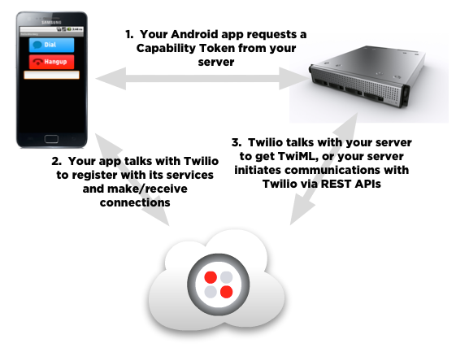
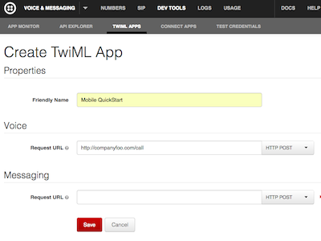

Twilio Client SDK for Android Quickstart
Overview
You want your Android phone or tablet app to make and receive calls? There’s an SDK for that!
Twilio Client for Android is a Java SDK for Google’s Android platform that enables voice communications with landlines or other Twilio Client devices, including web browsers or other mobile devices.
Architecture
There are three major pieces in a Twilio Client app:
- Your Android app that uses the
twilio-client-sdk.jarlibrary. - A server-side application to grant a capability token to your Client app, and to orchestrate Twilio’s telephony services using TwiML and Twilio’s REST API. You’ll use a TwiML Application to connect your Android app to Twilio’s cloud.
- Twilio’s cloud services to connect your app to conference calls, IVR applications, and make calls to PSTN and SIP devices.

We’ll walk you through each of these pieces in detail below. Let’s get started.
Quickstart Tutorial
In this tutorial, use the Twilio Client SDK for Android and TwiML APIs to demonstrate how to make an outgoing call, receive an incoming call, and make calls between two Twilio Client instances.
This guide assumes you have familiarity with Android and Java, and concepts like Activities (and their lifecycles), Listeners, and how to build a basic Android application.
Prerequisites
-
Install Eclipse and the Android Developer Tools plugin. We recommend that you use the latest version available.
-
Install the Android SDK and appropriate platform tools and platform API package. Note that the Client SDK depends on a minimum of API level 8 (Android 2.2).
-
Get a Twilio Account SID and Auth Token to initiate calls from your Android device. You will find these in your Account Dashboard. If you don’t have an account, you can always sign up for a free trial account.
-
In the example below, we’ll setup a web server on the public Internet to host the server-side code for generating capability tokens and TwiML. The Quickstart below provides a sample python app deployed to Heroku for this purpose, but you can use whatever method for deploying a web server you like.
Let’s get some of the server-side dependencies out of the way first.
Configure a Placeholder TwiML Application
Visit TwiML Apps in the Twilio Account Portal and click ‘Create TwiML App’. Enter ‘Mobile Quickstart’ as the app’s Friendly Name and click ‘Save’. Don’t worry about the Voice and Messaging URLs yet–we’ll fill them in shortly.
Once the application is saved, make note of its ApplicationSid (a long string like “APa4983020a0b29fb5db1b1dc68e322fbe”). We’ll need this in the upcoming steps.

Setup the back-end Application Server
Next, we’ll deploy a server to perform two functions:
- Provide capability tokens to our Android client application.
- Serve up our TwiML application and/or make REST API calls to orchestrate Twilio’s telephony services.
Quick Tour of the Application
The code for the Quickstart Tutorial server-side application can be found in the Server/ folder inside the SDK tarball. Feel free to open up server.py and take a look. The app uses Python’s Flask framework and exposes three endpoints:
/generates TwiML to tell Twilio to play “Welcome to Twilio” whenever you place a call./callgenerates TwiML to route calls to/from the PSTN and your Android application./tokenreturns a capability token to your Android application.
Deploying the Server
Now, we need to make this application available via the public Internet. You can do this with either of the following methods, or another approach to deploy a web server you’re comfortable with.
Option 1: Use Heroku
The easiest way to deploy the application is Heroku. To do this, do the following:
- Visit the Twilio Mobile QuickStart repository on Github and click the “Deploy to Heroku” button. If you don’t have a Heroku account, you’ll be led through the process to set one up.
- Once you’ve signed into Heroku, you’ll be taken to a form to deploy the Quickstart application.
- Enter your Twilio Account Sid and your Twilio Auth Token as the ACCOUNT_SID and AUTH_TOKEN values, respectively.
- Enter the TwiML App Sid you created above as the value for APP_SID.
- Enter any caller ID that you’ve verified with your Twilio account in the CALLER_ID field.
- Click Create your application.
- Once Heroku finishes, open up a second tab and return to the configuration screen for your TwiML app. Enter your Heroku application’s URL as the voice url for your application and save the change.
Option 2: Run Locally Using ngrok
With this method, you’ll run Flask on your local box and create a
publicly-addressable tunnel to it using ngrok.
- Open server.py and modify
ACCOUNT_SIDandAUTH_TOKENto match the values from your Twilio account. - Modify
APP_SIDto match the App Sid you created above. - Modify
CALLER_IDto any caller ID that you’ve verified with your Twilio account. - Install all the required python dependencies by running
pip install -r requirements.txtfrom theServer/folder at the command line. - Download and install ngrok.
- Run
python server.pyto start the server. - Run
ngrok 5000to open up a tunnel from the public internet to your server. - Return to the configuration screen for your TwiML app and enter your ngrok application’s URL as the voice URL for your application and save the change.
Testing your Server
To make sure your server deployed successfully, open a web browser and enter http://{your heroku app or ngrok address}/ and view source on the resulting page. If everything is working, you’ll see some XML that looks like this:
<?xml version="1.0" encoding="UTF-8"?> <Response> <Say>Welcome to Twilio</Say> </Response>
This is a simple TwiML application that will play an announcement whenever you make a call from your Android application.
Now that we have the server-side dependencies setup, let’s get started on our Android app. You can test the examples below in the Android Emulator or on your device.
The Eclipse Project
Please open the “HelloMonkey” Eclipse project in Quickstart folder (File -> Import -> General
-> Existing Projects into Workspace).
The HelloMonkey app is very simple, presenting “Dial” and “Hangup” buttons, and
a text field for who the app should call. The user interface elements have
already been wired up to the HelloMonkeyActivity class.
In this step, you’ll fill in the code to give the app its behavior, learning how to use the Twilio Client Android SDK in the process.
Creating a Device
The primary class for connecting to Twilio services from your app is
Device. This class represents a soft “device” that knows how to speak to Twilio services, coordinates service authorization with Twilio, listens for incoming connections, and establishes outgoing connections.
An instance of this class is created using a “capability token”, described in the next section.
You’ll use a Device to initiate outgoing calls and listen for incoming calls.
Let’s create an instance and wire it up!
Add a member variable of type Device to MonkeyPhone.java like so:
import com.twilio.client.Device;
import com.twilio.client.Twilio;
public class MonkeyPhone implements Twilio.InitListener
{
private Device device;
}
To initialize a device, you’ll change the URL to point to your server’s /token URL and pass the resulting string to - HttpHelper.httpGet() method (you may want to make necessary changes to run this code in separate thread).
Note: Make sure you swap in your back-end server’s /token URL for the sample URL in MonkeyPhone’s onInitialized method.
MonkeyPhone.java
import com.twilio.client.Device;
import com.twilio.client.Twilio;
public class MonkeyPhone implements Twilio.InitListener
{
private Device device;
public MonkeyPhone(Context context)
{
Twilio.initialize(context, this /* Twilio.InitListener */);
}
@Override /* Twilio.InitListener method */
public void onInitialized()
{
Log.d(TAG, "Twilio SDK is ready");
try {
String capabilityToken = HttpHelper.httpGet("http://companyfoo.com/token");
device = Twilio.createDevice(capabilityToken, null /* DeviceListener */);
} catch (Exception e) {
Log.e(TAG, "Failed to obtain capability token: " + e.getLocalizedMessage());
}
}
}
Making an HTTP request to the /token endpoint returns a
capability token, a string that, when given to a Device in your Android app,
grants it capabilities such as making outgoing calls or allowing incoming calls.
Capability tokens are an important part of Twilio Client, so let’s take a moment to explain them. You use capability tokens to sign communications from your Android app to Twilio. In a production application, these tokens are created by you on your server and allow you to specify what capabilities are going to be available to your app, such as whether it can receive incoming connections, make outgoing connections, etc.
For the security of your Twilio account, you should not embed a Capability Token or your Twilio Account’s Auth Token in the app you submit to the Google Play Store.
You can read more about capability tokens and their best practices here.
Tokens always have an expiration, which means all tokens have a limited lifetime to protect you from abuse. The token generated here is valid for one hour unless otherwise specified. To specify a different period of time, pass in the number of seconds as the expires parameter to TwilioCapability.generate() – for example, for a token that expires after 5 minutes, call TwilioCapability.generate(expires = 300). The maximum allowed lifetime for a token is 24 hours.
Now, back to coding! If you compile and run this code, you should see the following:

Now, we’ve got an app that can create outgoing connections and receive incoming connections.
For the time being, we’ll focus on making an outgoing connection. The connection will call a Twilio sample application that responds with a friendly greeting.
Dialing Out
Let’s add a method to MonkeyPhone to initiate a connection. Add a member variable of type Connection
to MonkeyPhone.java. To make a connection, we call the Device.connect() method. Just pass in null
parameters and a null listener for the moment; we’ll do more with these
arguments later.
MonkeyPhone.java
public void connect()
{
connection = device.connect(null /* parameters */, null /* ConnectionListener */);
if (connection == null)
Log.w(TAG, "Failed to create new connection");
}
Connections to Twilio, either incoming or outgoing, are represented by
instances of the class Connection. In addition, status callbacks are provided to objects that implement the listener interface DeviceListener and ConnectionListener. Add the code below in HelloMonkeyActivity to call this new method when the Dial
button is pressed:
HelloMonkeyActivity.java
@Override
public void onClick(View view)
{
if (view.getId() == R.id.dialButton)
phone.connect();
}
If you now compile the app and run it, you should be able to click the “Dial” button and hear the greeting. Awesome!
Wouldn’t it be nice if you could also hang up on a connection if you don’t want to hear the whole thing? Let’s go do that now.
Hanging up from your Android Device
Congratulations on making your first audio connection from your Android device to Twilio!
You should have heard a welcome message but as you probably noticed, you
had no way to close the connection as the Hangup button doesn’t do
anything. So, let’s add code in MonkeyPhone to hang up ongoing connection.
MonkeyPhone.java
public void disconnect()
{
if (connection != null) {
connection.disconnect();
connection = null;
}
}
And add code in HelloMonkeyActivity to call this new method when the hangup
button is pressed:
HelloMonkeyActivity.java
@Override
public void onClick(View view)
{
if (view.getId() == R.id.dialButton) {
phone.connect();
} else if (view.getId() == R.id.hangupButton) {
phone.disconnect();
}
}
That’s everything! Go ahead and make another call. You can now press the hangup button at any time and your connection will close.
Connecting to a TwiML Application
Wondering what actually happens when you connect using your app, and why you keep hearing that same welcome message? The key to this mystery is in the Python server we deployed earlier. Let’s take a look at that code:
server.py
APP_SID = 'YOUR APP SID HERE'
# some code ommitted here
@app.route('/token')
def token():
account_sid = os.environ.get("ACCOUNT_SID", ACCOUNT_SID)
auth_token = os.environ.get("AUTH_TOKEN", AUTH_TOKEN)
app_sid = os.environ.get("APP_SID", APP_SID)
capability = TwilioCapability(account_sid, auth_token)
# This allows outgoing connections to TwiML application
if request.values.get('allowOutgoing') != 'false':
capability.allow_client_outgoing(app_sid)
# This allows incoming connections to client (if specified)
client = request.values.get('client')
if client != None:
capability.allow_client_incoming(client)
# This returns a token to use with Twilio based on the account and capabilities defined above
return capability.generate()
This portion of the code is responsible for creating a capability token that tells your Twilio Device what actions it is allowed to perform.
The two lines below tell your device to make outgoing connections to the App Sid APa4983020a0b29fb5db1b1dc68e322fbe.
APP_SID = 'APa4983020a0b29fb5db1b1dc68e322fbe' # ... some code omitted here ... capability.allow_client_outgoing(app_sid)
Applications are just references to TwiML URLs that are fetched when a connection is established from a device, a browser, or a phone. If you are not familiar with TwiML, we suggest you head over to Twilio Markup Language Quick Start.
The string starting with ‘AP’ is an Application SID. You entered this Application Sid when you deployed the server in the steps above. That Application’s Voice URL points to your server’s / endpoint, which returns the TwiML to say “Welcome to Twilio”.
<?xml version="1.0" encoding="UTF-8"?> <Response> <Say>Welcome to Twilio</Say> </Response>
We change the user’s telephony experience by generating different TwiML. Let’s continue with an example that let’s us dial any phone number.
Passing Parameters to your Application to Make a VoIP Call
Now, let’s make a Twilio Application that can actually do something useful by passing data from your Android app to your TwiML script. Let’s dial out to an arbitrary phone number. It’ll be easy, all we need to do is:
- Grab the phone number that you can enter in the text field.
- Pass that phone number along to the
Device.connect()method. - Update your TwiML Application to point to the back-end endpoint that receives this input and dials the number entered by the user.
Let’s go do it.
The text field in the app is wired up to the member variable numberField in
HelloMonkeyActivity. We’ll now add some code to pass this through to your
script when creating the connection.
First, change the MonkeyPhone.connect() method to take in a String for the
phone number in MonkeyPhone.java, and add the number to a Map using the key
To. Then pass that parameter Map when calling
Device.connect():
MonkeyPhone.java
public void connect(String phoneNumber)
{
Map<String, String> parameters = new HashMap<String, String>();
parameters.put("To", phoneNumber);
connection = device.connect(parameters, null /* ConnectionListener */);
if (connection == null)
Log.w(TAG, "Failed to create new connection");
}
And finally, in HelloMonkeyActivity, pass the phone number from the text
field to the updated MonkeyPhone.connect() method.
HelloMonkeyActivity.java
@Override
public void onClick(View view)
{
if (view.getId() == R.id.dialButton) {
phone.connect(numberField.getText().toString());
} else if (view.getId() == R.id.hangupButton) {
phone.disconnect();
}
}
Now, let’s change our TwiML Application to point to our app’s /call endpoint. Go to the TwiML apps page in the account portal, change your application’s Voice URL to point to your server’s /call endpoint: http://{your server url}/call, and save your changes.
Now, go ahead and compile your app for the Android Emulator. Run it, enter another phone number in the box and hit dial. Your phone will ring and you can talk to yourself! Huzzah!
Here’s how it works. When your application connects to Twilio, your TwiML App’s Voice URL points to the /call endpoint on your python server, which runs the following code:
server.py
@app.route('/call', methods=['GET', 'POST'])
def call():
resp = twilio.twiml.Response()
from_value = request.values.get('From')
to = request.values.get('To')
if not (from_value and to):
return str(resp.say("Invalid request"))
from_client = from_value.startswith('client')
caller_id = os.environ.get("CALLER_ID", CALLER_ID)
if not from_client:
# PSTN -> client
resp.dial(callerId=from_value).client(CLIENT)
elif to.startswith("client:"):
# client -> client
resp.dial(callerId=from_value).client(to[7:])
else:
# client -> PSTN
resp.dial(to, callerId=caller_id)
return str(resp)
This code looks at the From parameter in the request from Twilio. If the connection is coming from your Android application, it grabs the To parameter passed by your application and dials the number.
Things work a bit differently if the call is coming from a PSTN phone number. Let’s dig into that now: Now, it’s time to get your app ringing.
Receiving Incoming Connections
Now, that we know how to initiate connections from your app, it’s time for your app to start receiving incoming connections. By the end of this tutorial, you will be able to call in to your device using the Android Emulator (or vice-versa). Hold on tight…
To receive incoming connections, we’ll do the following things:
- Give the app client a name and “register” it with Twilio.
- Add callbacks to notify your app of incoming connections via listener methods.
Change your code to pass this client name to your application server when it starts up. (In a real app, you would likely pass a username/password combination that the user would enter, but we’ll omit this for simplicity.)
Device announces the important events to an object that implements the
DeviceListener interface:
public void onStartListening(Device inDevice);
- callback for when the device is successfully registered with Twilio
public void onStopListening(Device inDevice);
- callback for when the device is no longer listening for incoming connections due to an explicit request to stop
public void onStopListening(Device inDevice, int inErrorCode, String inErrorMessage);
- callback for when the device is no longer listening for incoming connections due to an error
We’ll modify MonkeyPhone to implement these methods. First, we’ll declare
the interface and register the instance of MonkeyPhone to be the Device’s
listener when we create it, and then we’ll define the three
DeviceListener methods. We don’t need to take any action here, but
we’ll log the various state transitions and any errors.
MonkeyPhone.java
public class MonkeyPhone implements Twilio.InitListener, DeviceListener
{
/* ... other methods ... */
private Device device;
private Connection connection;
/* Twilio.InitListener method */
@Override
public void onInitialized()
{
Log.d(TAG, "Twilio SDK is ready");
try {
String capabilityToken = HttpHelper.httpGet(""http://companyfoo.com/token?client=jenny");
device = Twilio.createDevice(capabilityToken, this);
} catch (Exception e) {
Log.e(TAG, "Failed to obtain capability token: " + e.getLocalizedMessage());
}
}
/* ... other methods ... */
@Override /* DeviceListener method */
public void onStartListening(Device inDevice)
{
Log.i(TAG, "Device is now listening for incoming connections");
}
@Override /* DeviceListener method */
public void onStopListening(Device inDevice)
{
Log.i(TAG, "Device is no longer listening for incoming connections");
}
@Override /* DeviceListener method */
public void onStopListening(Device inDevice, int inErrorCode, String inErrorMessage)
{
Log.i(TAG, "Device is no longer listening for incoming connections due to error " +
inErrorCode + ": " + inErrorMessage);
}
}
Actually accepting the incoming connection is a little bit more work. You might want to glance at the section of the faq page that deals with incoming connections for some background on why this is the case. What it boils down to is:
- Create a
PendingIntentthat can activateHelloMonkeyActivity. - Register this
PendingIntentusingDevice.setIncomingIntent(). - Provide a hook in
MonkeyPhoneto handle the incoming call. - Implement
onNewIntent()inHelloMonkeyActivityto update the activity’sIntent. - Implement
onResume()inHelloMonkeyActivityto check to see if we have an incoming connection, and handle it if so.
So for the first half:
MonkeyPhone.java
/* Twilio.InitListener method */
@Override
public void onInitialized()
{
Log.d(TAG, "Twilio SDK is ready");
try {
String capabilityToken = HttpHelper.httpGet("http://companyfoo.com/token?client=jenny");
device = Twilio.createDevice(capabilityToken, this);
Intent intent = new Intent(context, HelloMonkeyActivity.class);
PendingIntent pendingIntent = PendingIntent.getActivity(context, 0, intent, PendingIntent.FLAG_UPDATE_CURRENT);
device.setIncomingIntent(pendingIntent);
} catch (Exception e) {
Log.e(TAG, "Failed to obtain capability token: " + e.getLocalizedMessage());
}
}
/* ... other methods ... */
public void handleIncomingConnection(Device inDevice, Connection inConnection)
{
Log.i(TAG, "Device received incoming connection");
if (connection != null)
connection.disconnect();
connection = inConnection;
connection.accept();
}
And for the second half:
HelloMonkeyActivity.java
@Override
public void onNewIntent(Intent intent)
{
super.onNewIntent(intent);
setIntent(intent);
}
@Override
public void onResume()
{
super.onResume();
Intent intent = getIntent();
Device device = intent.getParcelableExtra(Device.EXTRA_DEVICE);
Connection connection = intent.getParcelableExtra(Device.EXTRA_CONNECTION);
if (device != null && connection != null) {
intent.removeExtra(Device.EXTRA_DEVICE);
intent.removeExtra(Device.EXTRA_CONNECTION);
phone.handleIncomingConnection(device, connection);
}
}
If you compile and run the app, it’s now ready to receive incoming calls. Now, we
need to
provision a Twilio phone number,
(or use an existing one) and configure the Voice URL to point to your application server: http://{your app's url}/call.
Call your Twilio number and you should be connected to your device (or Android Emulator, whichever you’re running), which will automatically answer the call. Start talkin’.
Ready to put it all together?
Making Calls in/out of your App
Time to put it all together… using your Quickstart skills, you’ve already initiated an outgoing connection, and received an incoming connection. Now, let’s call from one client to another.
For this example, we’ll make a call between the Android Emulator and your device.
To do this, we’ll need to log in as two different users. We’ll change the login code to register as “tommy” for the app in the Android Emulator, and “jenny” for the app on your Android device.
In MonkeyPhone’s onInitialized() method, add some add some
conditional-compilation code:
MonkeyPhone.java
@Override
public void onInitialized()
{
Log.d(TAG, "Twilio SDK is ready");
try {
// the Emulator has a somewhat unique "product" name
boolean isEmulator = Build.PRODUCT.equals("sdk") || Build.PRODUCT.equals("google_sdk");
String clientName = isEmulator ? "tommy" : "jenny";
String capabilityToken = HttpHelper.httpGet("http://companyfoo.com/token?client=" + clientName);
device = Twilio.createDevice(capabilityToken, this);
Intent intent = new Intent(context, HelloMonkeyActivity.class);
PendingIntent pendingIntent = PendingIntent.getActivity(context, 0, intent, PendingIntent.FLAG_UPDATE_CURRENT);
device.setIncomingIntent(pendingIntent);
} catch (Exception e) {
Log.e(TAG, "Failed to obtain capability token: " + e.getLocalizedMessage());
}
}
The Python script has some simple call routing rules:
- If the call is coming from PSTN, the app tells to Twilio to dial Client
jenny. - Otherwise, the application tells Twilio to dial whatever number is passed in the
Toparameter: If theToparameter is a PSTN number, it writes that out within the<Number>noun (which then will call a regular phone). If theToparameter is another client name, as indicated byclient:prefix, it writes out a<Client>noun, which will try and connect to a named Twilio Client app (a browser or another mobile client).
So now build, install, and run your app on both your Android device and the Android Emulator. Then have one of the platforms call the other (e.g. by typing “client:tommy” into the Android device’s app). Once the connection has been established you should be able to talk between your phone and your laptop! And of course, you can call regular phone numbers as we demonstrated above.
Wrapping up
That’s it for this Quickstart! If you want to learn more about how to customize the telephony experience of your application, check out the TwiML documentation.